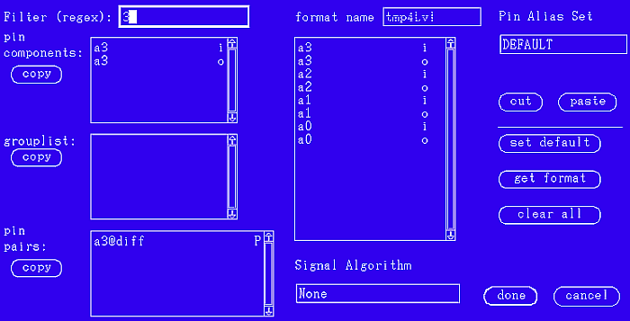

Creating a new format
Procedure
-
In the timing diagram window select Format > define new format.
The Define format window appears.

- In the Format name text box, enter a name for the format.
-
Use Filter (regex) to filter the elements of the pin
components, the group list, and the pin
pairs:
- Type a regular expression, for example: 3
-
Press Enter
All elements according to your filter expression are displayed in the lists. Except, for the group list the following conditions must be fulfilled:
- At least one active group member
- No DC pins
- All active group members belong to the same port
- All active group members must have the same frequency mode
- IO modes:
All active group members must have the same IO mode (I, O)
or
some active group members are I, the others are IO (O not allowed)
or
some active group members are 0, the others are IO (I not allowed)
- Pins have the same waveforms and timing setup (no mixed edge syntax is supported; all pins need to use "d" or "s/f" syntax when describing the drive edges, but not a mixture of both).
-
Enter the alias set name in the Pin Alias Set list. Then the pin
aliases are shown in the pin components list.
If you choose DEFAULT from the Pin Alias Set list, no alias set is used and the package pin names are shown in the pin components list.
-
Select the pins you want to display. For each pin, pin group or pin pair:
- Click the pin, pin group or pin pair in the respective list at the left of the window.
- Click the Copy button associated with that list.
- If you have selected pin pairs, select the desired signal algorithm by choosing None, Differential View or Common Mode from the Signal Algorithm list.
- Click Done.
Functional changes
- Introduced before SmarTest 6.3.2
- SmarTest 6.5.2: You can select pin alias set when you create a new format.
- SmarTest 6.5.4: Added filter for pin components, the group list, and the pin pairs